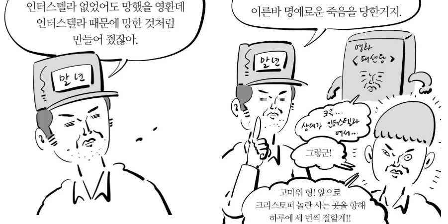
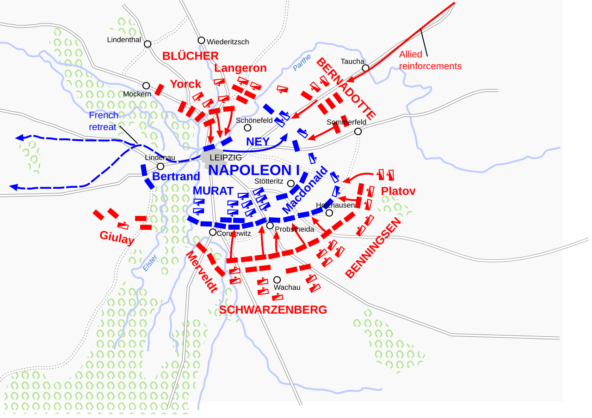
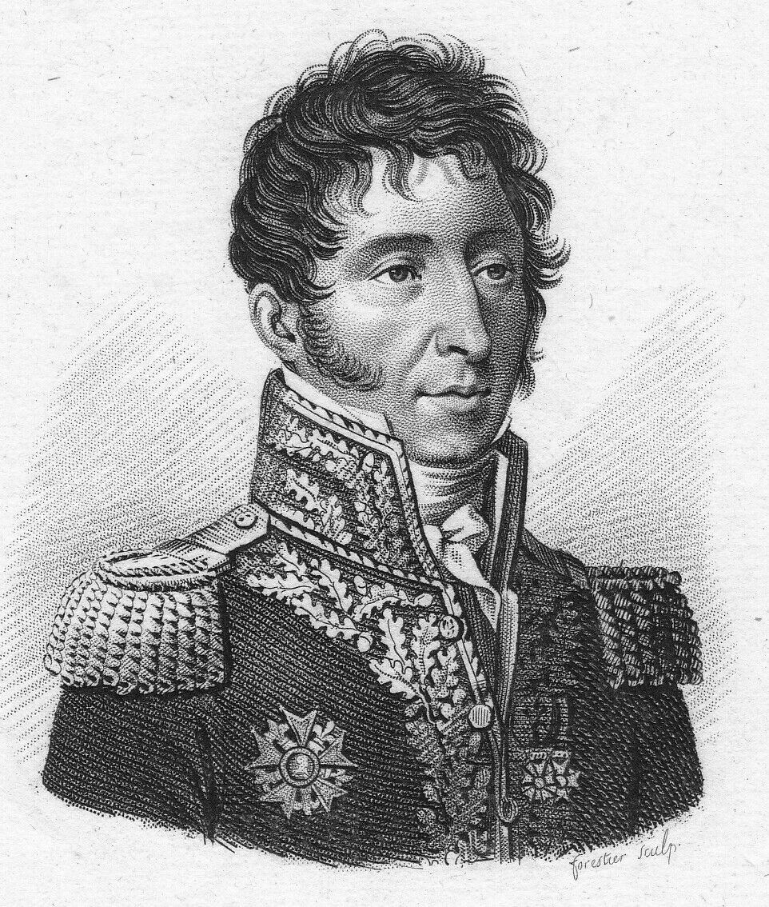
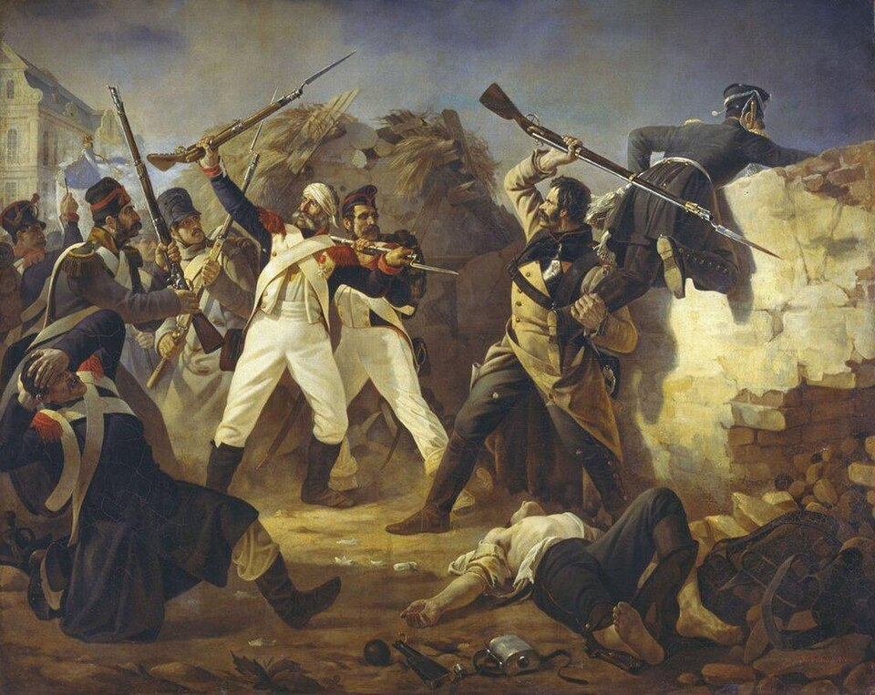
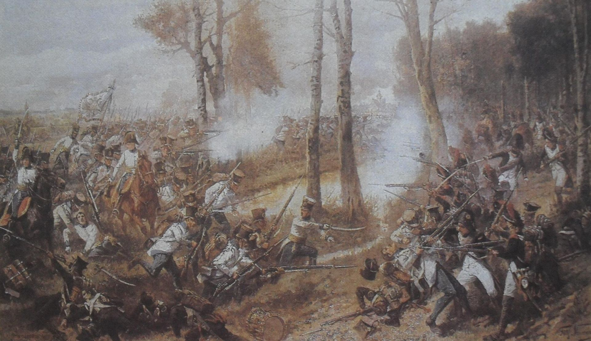

라이프치히 전투 (35) - 후퇴의 핑계
게시: 2026-02-16T06:30:12+09:00
작센군의 집단 이탈이 다국적군 그랑다르메에게 꽤 큰 충격을 주기는 했습니다만, 그것으로 인해 전황이 크게 바뀐 것은 아니었습니다. 어차피 그랑다르메는 파운스도르프에서 철수하고 있었기 때문이었습니다. 다만 여러 사람들에게 여러 가지 핑계와 자랑거리 등 다양한 이야기를 만들어내기는 했습니다. 작센군의 집단 이탈에 대해 가장 먼저 생색을 내기 시작한 것은 영국 로켓여단이었습니다. 그들은 자신들의 신무기에 혼이 빠진 작센군 수천 명이 불과 200명도 안 되는 자신들에게 항복했다고 본국에 보고했습니다. 물론 이건 전혀 사실이 아니었습니다. 작센군은 로켓 사격을 직접 받은 부대도 아니었고 로켓과는 무관하게 그날 오전에 이미 연합군으로의 이탈을 모의하고 있었으며, 분명히 스트로가노프의 러시아군에게 전향 의사를 밝혔습니다. 작센군의 이탈에 대해서는 베르나도트도 신이 나서 숟가락을 얹었습니다. 자신이 1809년 바그람 전투 때 작센 병사들로 구성된 제9군단을 이끌었고 그때 나폴레옹의 부당한 명령에 의해 자신과 작센 병사들이 큰 희생을 치렀으나, 자신이 작센인들의 용기와 투지를 극찬하여 작센 병사들은 자신에게 큰 호감을 가지고 있었기 때문에 이 날 자신에게 투항한 것이라는 주장을 한 것입니다. 이것도 다들 아시다시피 절반 정도만 사실이었습니다. 바그람 전투 이후 베르나도트가 나폴레옹과 완전히 사이가 틀어진 이유가 베르나도트의 일방적인 전과 발표 때문이기는 했으나, 베르나도트는 딱히 작센군을 위해 그런 것은 아니었고 자화자찬을 한 것에 불과했습니다. 또 작센 사단이 투항한 스트로가노프는 베르나도트의 북부 방면군 소속이 아니라 베니히센의 폴란드 방면군 소속이었습니다. 그러나 작센군의 집단 이탈을 가장 잘 활용한 것은 뜻밖에도 나폴레옹이었습니다. 그는 라이프치히에서의 패배 원인을 작센인들의 배신 탓이라고 돌렸던 것입니다.

(이말년 만화는 수많은 짤을 만들어냈는데, 이 '명예로운 죽음' 짤도 명짤 중의 하나입니다. 이 짤이 나온 것도 무려 12년 전입니다.) 실제로 작센군 3~4천 명이 적에게 투항하자마자 프랑스군을 향해 총부리를 돌렸다면 프랑스군의 피해가 더 커졌겠지만 그런 일은 없었습니다. 다만 그들의 투항이 나폴레옹의 후퇴에 대해 촉매 역할을 한 것은 사실이었습니다. 작센 사단장이었던 제샤우(Heinrich Wilhelm von Zeschau) 장군의 읍소에 따라 투항을 거부하고 프랑스군에 남은 약 7백 여명의 작센군에 대해서도 나폴레옹은 '믿을 수 없다'는 이유로 전선에서 빼내어 후방으로 돌렸습니다. 그러니까 제샤우 장군의 노력에도 불구하고 작센 사단 전체가 상실된 셈이었는데, 18~19만 대군 중 1개 사단 5천 정도는 크다면 크고 작다면 작은 수였습니다. 그러나 작센군과는 무관하게, 나폴레옹은 이미 전날 밤부터 후퇴를 전제로 작전을 짜고 있었습니다.

(1813년 10월 18일, 라이프치히 전투 셋째 날 상황입니다.) 이틀 전인 라이프치히 전투 첫날 10월 16일에, 오스트리아 제2군단을 이끌고 보헤미아 방면군 좌익의 될리츠를 공격하던 메르펠트(Maximilian von Merveldt) 장군은 나폴레옹 근위대의 역습에 어처구니 없이 포로가 된 바 있었습니다. 나폴레옹은 이미 후퇴를 결정한 이후에도, 실낱 같은 희망을 품고 18일 새벽 일찍, 메르펠트에게 연합국 군주들에게 보내는 편지를 들려 연합군 진영으로 보냈습니다. 그 편지에서, 나폴레옹은 마치 크게 선심이라도 쓰는 것처럼 그랑다르메를 잘러강 서쪽으로 후퇴시키고 엘베강과 오데르강 일대의 요새들, 즉 글로가우, 슈테틴, 퀴스트린, 토르가우 등은 물론 단치히와 드레스덴도 넘겨줄 테니 평화 협정을 맺자고 제안했습니다. 연합국 군주들은 그에 대해 모두 코웃음으로 대응했습니다. 그런 상황에서, 10월 18일 전투에서 뜻밖의 기적이 벌어지지 않는 한 나폴레옹의 후퇴는 기정사실이었습니다. 기적은 없으며 이제 후퇴할 때가 되었다는 신호는 주력 전선인 남쪽이 아니라 북동쪽에서 나왔습니다. 레이니에가 지키던 파운스도르프가 함락되면서, 북쪽에서 내려온 베르나도트의 북부 방면군과 동쪽에서 접근한 베니히센의 폴란드 방면군이 합세하게 되었던 것입니다. 그 결과, 북쪽 방어선의 핵심이자 마르몽의 제6군단이 굳게 지키던 쇤너펠트(Schönefeld)가 직접적인 압박을 받게 되었습니다. 오후 3시 이후부터는 랑쥬롱은 물론, 파운스도르프를 함락시킨 뷜로와 베니히센의 공세가 집중되었기 때문이었습니다. 마르몽의 참모진 대부분이 부상을 입을 정도로 마르몽은 격렬하게 저항했으나, 결국 마르몽은 후퇴를 결정합니다. 이후에도 네가 투입한 리카르(Étienne Pierre Sylvestre Ricard)의 제11사단 약 7천 병력이 쇤너펠트에 대해 반격을 가하기는 했으나, 파운스도르프가 함락된 시점에서 이미 전선은 지탱하기 어렵게 된 것이었습니다.

(리카르는 나폴레옹보다 2살 연하로서, 처음에는 수셰(Suchet) 밑에서 복무했다가 나중에 술트(Soult) 밑에서 1805년의 아우스테를리츠 전투에 공을 세우며 장군으로 승진합니다. 그는 술트의 스페인 및 포르투갈 침공 때도 술트의 심복 참모로서 동행했는데, 그게 결국 리카르 본인에게는 좋지 않은 결과를 냈습니다. 술트가 포르투갈의 왕이 되고자 하는 야망을 가지게 되었을 때, 거기에 부채질하는 역할을 도맡아 했기 때문이었습니다. 특히 술트의 휘하 장군들에게 연판장을 돌리며 술트가 포르투갈의 왕이 되는 것을 지지하자는 편지를 작성한 것이 리카르였습니다. 리카르는 그 편지에서 '술트가 왕으로 책봉되는 것을 지지하는 것은 나폴레옹에 대한 충성심과는 별개의 것'이라며 안전 장치를 두려고 노력했으나, 결국 그 편지 사본을 읽은 나폴레옹은 격노했습니다. 포르투갈에서 왕위 등극은 고사하고 웰링턴의 영국군에게 참패하고 후퇴한 술트에 대해, 나폴레옹은 '술트 너에 대해 내가 기억하는 것은 아우스테를리츠 뿐이다'라며 용서했으나, 리카르는 불명예스럽게 무보직으로 돌려져 1811년까지 사실상 강제 전역 상태로 지내야 했습니다. 그래서인지 그는 부르봉 왕정 복위 이후 왕정에 충성했고, 백일천하 때도 루이18세를 따라갔습니다.) 나폴레옹은 큰 그림을 볼 줄 아는 지휘관이었습니다. 파운스도르프의 전황과 함께 작센군의 투항 소식을 받아들자, 나폴레옹은 북쪽 전선을 맡고 있던 네의 사령부를 찾아 네와 긴급히 회의를 가진 뒤, 오후 4시경 명령서를 발부하여 제1 기병군단을 선두로 제3, 제5 기병군단의 후퇴를 명했습니다. 후퇴 작전시에는 기병대가 후위 역할을 맡는 경우가 꽤 많았는데, 이때 기병대부터 후퇴에 나선 것은 이 후퇴가 라이프치히 시내를 관통하여 이루어진다는 특수성에 기인한 것으로 보입니다. 시가전에서 기병대가 할 일은 많지 않았기 때문입니다. 그 뒤를 따르는 것은 탄약차 호송대(artillery park)였습니다. 어떻게 생각하면 이들이 가장 먼저 퇴각해야 했는데 기병대보다 순위가 밀린 것은, 탄약차들은 먼저 아군 포병대에게 포탄과 장약을 보급해준 뒤 이동해야 했기 떄문이었습니다. 이 시점에서 이미 그랑다르메 측과 연합군 측은 모두 2만5천~3만 정도의 사상자를 내고 있었습니다. 양측의 피해가 동일하니까 아직 나폴레옹이 결정적인 패배를 당한 것은 아니라고 할 수도 있었습니다. 그러나 그날 아침 연합군은 35만, 나폴레옹은 19만 정도였으니 동일한 피해를 냈다면 상황은 나폴레옹에게 더 불리해진 셈이었습니다. 물론 이걸 긍정적으로 볼 수도 있습니다. 원래 전투에서는 35만 vs 19만으로 맞붙으면, 공평하게 3만씩 피해를 내고 32만 vs. 16만으로 줄어들지 않습니다. 2대1로 싸우면 수적으로 불리했던 1명은 묵사발이 나지만 두 명은 가벼운 찰과상만 입고 끝나는 경우가 많은 것처럼, 19만 쪽이 훨씬 더 큰 사상자를 내는 것이 보통이었습니다. 그런데도 양측의 피해가 비슷했다는 것은 나폴레옹 측이 그때까지도 매우 잘 싸웠다는 것을 뜻합니다.

(수적인 측면에서나 화력 측면에서나 크게 불리했던 그랑다르메 측의 피해가 연합군 대비 더 크지 않았던 주된 이유는 그랑다르메가 쇤너펠트와 프롭스트하이다처럼 돌로 된 주택과 담벽이 많은 마을을 요새화하고 거기서 저항했기 때문이었습니다. 아직 폭발탄 사용이 제한적이었던 당시, 돌벽 하나가 수많은 병사들의 목숨을 구할 수 있었습니다.) 이미 대세가 기울었다는 것은 누구도 부정할 수 없었지만, 여기서 후퇴 작전만 잘 수습해서 남은 병력이라도 무사히 탈출시킬 수 있다면, 라인강 서쪽에서 나폴레옹은 얼마든지 재기할 수도 있었습니다. 게다가 이 시점에서, 나폴레옹은 3가지 결정적인 이점을 가지고 있었습니다. 첫째, 본인이 나폴레옹이었습니다. 아무리 한물 갔다고 해도, 그보다 더 뛰어난 지휘관은 찾기 어려웠습니다. 둘째, 이제 곧 밤의 어둠이 찾아올 시간이었고, 어둠은 후퇴하는 측의 편이었습니다. 셋째, 후퇴하는 나폴레옹이든 추격하는 연합군이든 모두 2개의 강, 즉 플라이서와 엘스터를 건너야 했는데, 이 다리는 나폴레옹 수중에 있었습니다. 아군이 후퇴한 뒤 다리면 날려버리면 연합군의 추격은 좌절될 수밖에 없었습니다. 나폴레옹은 여기서 벗어난 뒤 얼마든지 재기에 성공할 수 있었습니다.

(라이프치히 전투에서 후퇴하는 프랑스군과 개천을 건너며 추격하는 제19 헝가리 연대의 모습입니다. 라이프치히 전투에서는 강들과 개천들이 중요한 요소로 작용했습니다.) Source : The Life of Napoleon Bonaparte, by William Milligan Sloane Napoleon and the Struggle for Germany, by Leggiere, Michael V With Napoleon's Guns by Colonel Jean-Nicolas-Auguste Noël https://www.britannica.com/event/Napoleonic-Wars/Dispositions-for-the-autumn-campaign http://www.historyofwar.org/articles/campaign_leipzig.html https://warhistory.org/@msw/article/leipzig-battle-of-the-nations https://www.encyclopedia.com/history/encyclopedias-almanacs-transcripts-and-maps/leipzig-battle-0 https://warfarehistorynetwork.com/article/death-knell-for-napoleons-empire/ https://www.napoleon-series.org/military-info/battles/leipzig/c_leipzigoob10.html https://en.wikipedia.org/wiki/%C3%89tienne_Pierre_Sylvestre_Ricard